РАЗРАБОТКА ИНФОРМАЦИОННОЙ СИСТЕМЫ ДЛЯ БИБЛИОТЕКИ
Сложность: *
Теги: справочник, документ, ввод на основании, регистр накопления, схема компоновки данных
ЗАДАНИЕ
Заказчик просит разработать информационную систему для библиотеки. Необходимо вести учет читателей библиотеки и книг.
1. В системе нужно регистрировать выдачу книг. Следует фиксировать читателя и перечень взятых им книг.
2. Кроме того, нужно регистрировать возврат книг в библиотеку. Причем возврат книг должен формироваться на основании выдачи книг.
3. Также необходимо формировать отчет, в котором будут выводиться должники и список взятых ими книг. В отчете нужно реализовать возможность производить отбор по читателю и по книге.
Чтобы вести учет читателей библиотеки и книг, в «1С:Предприятии» имеется объект конфигурации справочник.
Определение
Справочник – это объект конфигурации, который хранит справочную информацию,
например, перечень товаров или список сотрудников (более подробно про
справочники можно прочитать здесь: https://v8.1c.ru/platforma/spravochniki/).
Добавим справочник «Читатели».
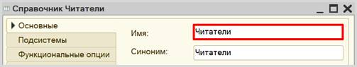
Перейдем на вкладку «Данные» и увеличим количество символов
наименования до 60.
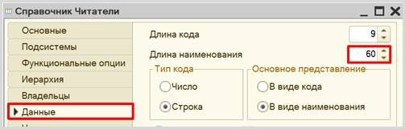
На этой вкладке можно добавить реквизиты для
хранения любой информации о читателе. Например, добавим реквизит «Телефон».
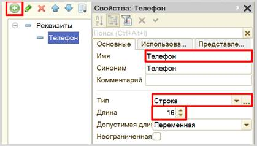
Зададим маску для данного реквизита.
Определение
Маска – это шаблон для ввода информации в данный реквизит.
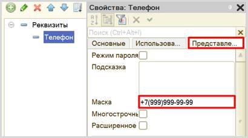
Создадим еще один справочник «Книги».
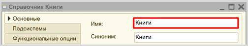
Аналогично перейдем на вкладку «Данные» и
увеличим длину наименования до 100.
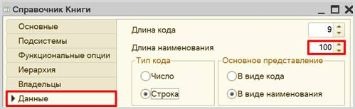
Добавим реквизиты «Автор» и «ГодИздания».
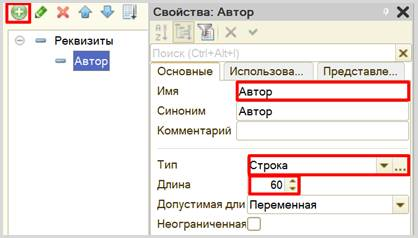
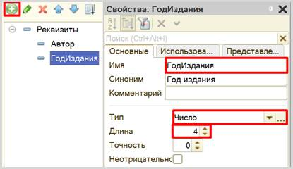
Теперь можно перейти в режим
«1С:Предприятие» и добавить элементы в созданные справочники.
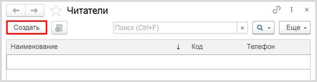
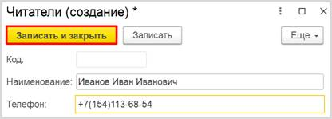
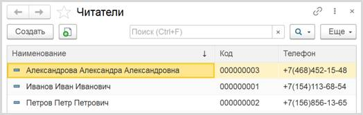
Аналогично добавим несколько элементов в справочник «Книги».
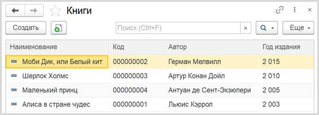
Таким образом, мы организовали хранение объектов аналитики.
Переходим к следующему пункту задачи: нам
необходимо регистрировать выдачу некоторого перечня книг конкретному читателю.
Для регистрации факта выдачи книг будем использовать объект конфигурации документ.
Определение
Документ – это объект конфигурации, хранящий информацию о каких-либо событиях, произошедших в «жизни» предприятия. Например, с помощью документа можно зарегистрировать (то есть сохранить данные документа для последующей обработки) продажу товаров или начисление зарплаты (подробнее про документы можно прочитать здесь: https://v8.1c.ru/platforma/dokumenty/).
Добавим новый документ «ВыдачаКниг».
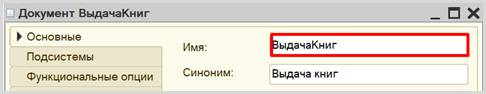
Перейдем на вкладку «Данные» для формирования структуры документа.
Добавим новый реквизит «Читатель» с типом «СправочникСсылка.Читатели».
Таким образом, пользователь сможет заполнить данный реквизит (поле) только
элементом из справочника «Читатели».
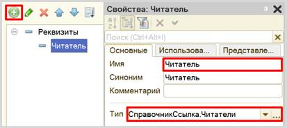
Разумеется, мы можем добавить несколько реквизитов и хранить в каждом
из них отдельную книгу. Но количество взятых читателем книг может быть
(теоретически) неограниченно. Следовательно, создание отдельного реквизита нам
не поможет.
Добавим табличную часть «СписокКниг». В
табличную часть можно добавить неограниченное количество строк.
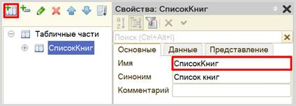
На данный момент табличная часть совершенно пуста. Нужно добавить в нее
колонки для заполнения оператором.
Поскольку нас интересует перечень взятых читателем книг, то именно
реквизит «Книги» нужно добавить в данную табличную часть.
По аналогии с реквизитом «Читатель» дадим возможность оператору
заполнять строки только элементами из справочника «Книги», поэтому установим
тип реквизита «СправочникСсылка.Книги».
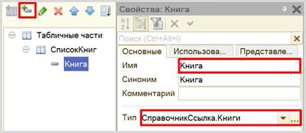
Помимо выдачи книг данная информационная система должна регистрировать
возврат читателем книг в библиотеку. Здесь все должно быть аналогично: оператор
должен отметить читателя, а также книги, которые читатель вернул в библиотеку.
Структура документов совершенно одинакова, следовательно, мы можем не тратить
время на создание точно такого же документа, а создать новый документ
копированием существующего.
Для этого следует выделить
нужный документ в окне конфигурации и нажать на кнопку «ДобавитьКопированием».
Должен появиться документ с аналогичной структурой, но слегка отличающимся
названием (система автоматически следит за уникальностью имен объектов
конфигурации).
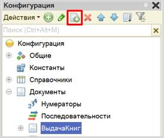
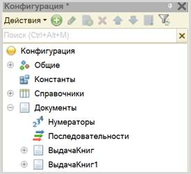
Переименуем документ в «ВозвратКниг».
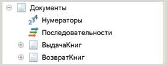
Вы можете убедиться в том, что новый документ обладает идентичной
структурой. Для этого перейдите на вкладку «Данные» и сравните его с документом
«ВыдачаКниг». Обратите внимание на типы реквизитов, они тоже должны быть
одинаковыми.
Как нам ускорить процесс работы оператора? Можно заранее заполнить все
поля документа «ВозвратКниг» на основе документа «ВыдачаКниг». Предположим, что
некоторый читатель взял две книги, оператор заполнил документ «ВыдачаКниг», в
который внес читателя и арендованные книги. Затем, когда читатель вернул книги
в библиотеку, оператор сможет найти тот документ «ВыдачаКниг» и на основании
него создать документ «ВозвратКниг» с уже заполненными полями.
Для выполнения данной задачи будем использовать конструктор ввода на основании. Более подробно про конструктор ввода на основании можно прочитать
здесь: https://v8.1c.ru/platforma/konstruktor-vvoda-na-osnovanii/.
Откройте окно редактирования документа «ВозвратКниг» и перейдите на
вкладку «Ввод на основании». Нажмите на кнопку с зеленым карандашиком для
выбора документа, на основании которого будет заполняться документ
«ВозвратКниг».
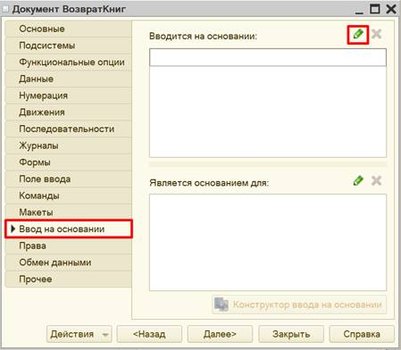
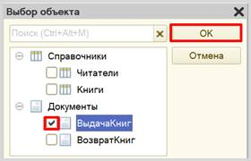
Далее нужно воспользоваться конструктором
ввода на основании.
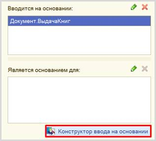
В открывшемся окне следует указать, какими данными из документа
«ВыдачаКниг» нужно заполнить поля документа «ВозвратКниг».
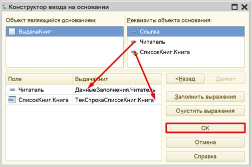
При нажатии на кнопку «ОК» формируется программный код. Данный код
описывает, какие данные из документа-основания нужно перенести в реквизиты
документа «ВозвратКниг».
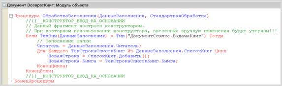
Теперь можно перейти в режим «1С:Предприятие» и проверить
работоспособность созданных документов.
Для начала заполним документ «ВыдачаКниг».
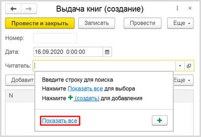
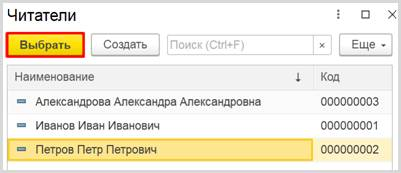
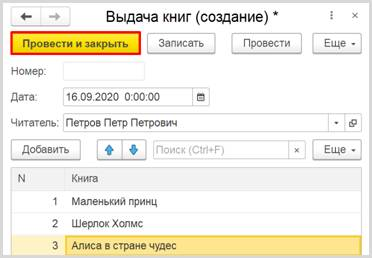
Таким образом, была реализована возможность фиксировать выдачу книг
читателям.
На основании данного документа можно сформировать документ «Возврат
книг».
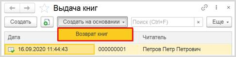
Откроется форма документа «Выдача книг» с уже заполненными данными. Мы
можем отредактировать список книг, удалив несколько из списка.
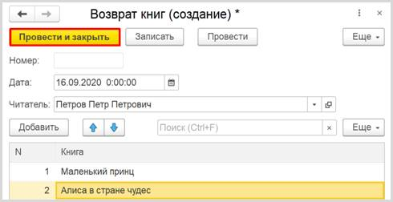
Таким образом, мы реализовали возможность регистрации возврата книг.
Далее нас интересует возможность вести учет
книг и читателей, которым они выданы. Для этого воспользуемся регистром накопления.
Определение
Регистр накопления – это такая итоговая таблица, которая может автоматически считать какие-либо элементы, например, денежные средства, материалы (дополнительно про регистры накопления можно прочитать здесь: https://v8.1c.ru/platforma/registr-nakopleniya/).
Добавим новый регистр накопления «ВыданныеКниги» вида «Остатки».
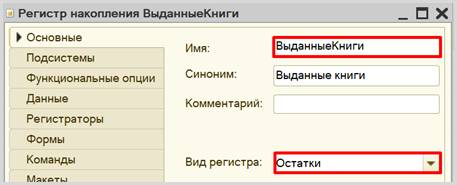
Для формирования структуры регистра перейдем на вкладку «Данные».
Структура регистра накопления отличается от структуры документа.
Заполнение данного окна проще всего начинать с добавления ресурса. Чтобы понять, что использовать в качестве ресурса, следует задать вопрос: «Что мы хотим накапливать/считать в данном регистре?». Мы хотим считать количество. Следовательно, количество и будет являться ресурсом. Тип данного реквизита – «Число».
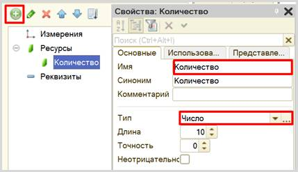
Чтобы разобраться с измерением, нужно понять, в разрезе чего мы хотим считать количество. Мы хотим считать количество (чего?) книг в разрезе (чего?) читателей. Значит, в качестве измерения следует добавить реквизиты «Книга» (тип – СправочникСсылка.Книги) и «Читатель» (тип – СправочникСсылка.Читатели).
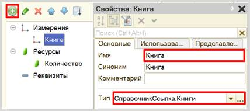
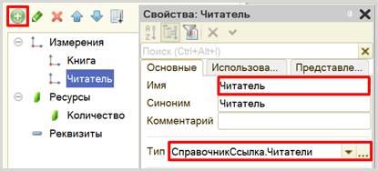
Чтобы регистр накопления заработал, нужно сделать следующее:
2. Описать, каким образом данные из документа-регистратора должны попадать в регистр.
В данный регистр будут попадать данные из обоих созданных документов, поэтому оба документа будут являться регистраторами для регистра.
Начнем с документа «ВыдачаКниг» – откроем окно редактирования данного документа на вкладке «Движения». Отметим, что документ будет делать движения в регистр накопления и воспользуемся конструктором движении.
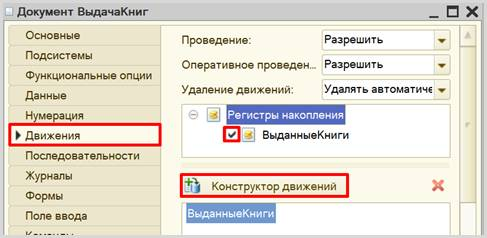
Окно конструктора движений состоит из нескольких областей:
q Левая верхняя область позволяет переключаться между регистрами (один документ может делать движения сразу в несколько разных регистров).
q Правая верхняя область описывает реквизиты документа-регистратора. Чтобы отобразить в данной области реквизиты табличной части нужно выбрать ее в соответствующем поле.
q В нижней части окна описаны реквизиты регистра накопления. Нужно заполнить поле «Выражение» реквизитами документа.
Поскольку выдача книг должна увеличивать количество читателей-должников, то тип движения регистра следует выбрать «Приход». Регистр будет обозначаться знаком «+» (плюс).
Если все было сделано правильно, имена и типы реквизитов совпадают, то при нажатии на кнопку «Заполнить выражения» реквизиты регистра заполнятся автоматически. Если этого не произошло, то заполните поле «Выражение» вручную, путем выбора соответствующих реквизитов документа.
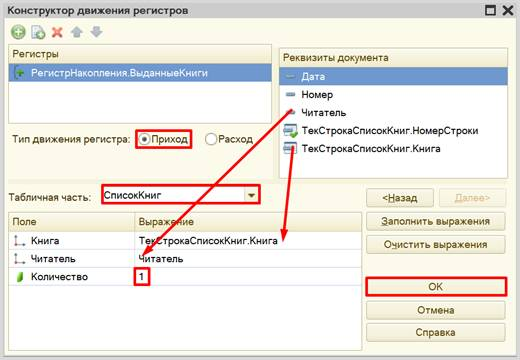
При нажатии на кнопку «ОК» система сформирует программный код, который при успешном проведении документа произведет движения в регистр накопления, то есть скопирует данные из документа в регистр накопления.
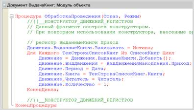
Значение в регистре накопления увеличивается на 1 (единицу) за каждую выданную читателю книгу. Документ «ВозвратКниг» должен делать все с точностью до наоборот: значение в регистре накопления должно уменьшаться на 1 (единицу) за каждую возвращенную в библиотеку книгу.
Реализуем это.
Откроем окно редактирования документа «ВозвратКниг» на вкладке «Данные». Отметим, что данные из документа будут двигаться в регистр накопления и воспользуемся конструктором движений.
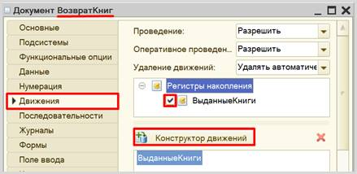
Заполним окно конструктора движений точно так же, как и для документа «ВыдачаКниг». Единственная разница будет лишь в том, что документ будет совершать движение со знаком «-» (минус), следовательно, тип движения нужно выбрать «Расход».
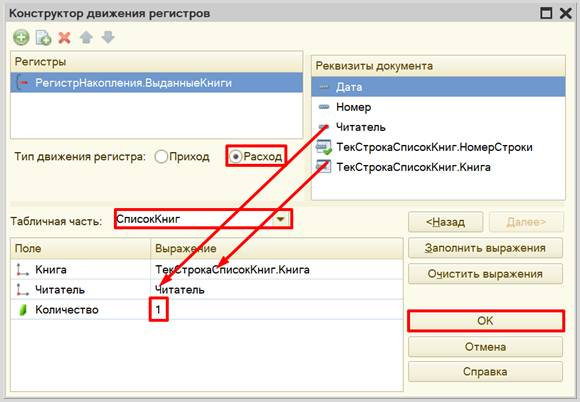
В результате имеем программный код, который расположился прямо под процедурой «ОбработкаЗаполнения», который был получен в результате работы с конструктором ввода на основании.
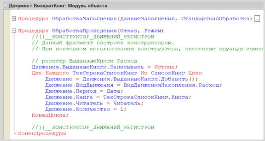
Проверим работоспособность регистра накопления в режиме «1С:Предприятие».
В первую очередь, нужно перепровести (провести заново) существующие документы выдачи и возврата книг, иначе данные никак не попадут в регистр накопления.
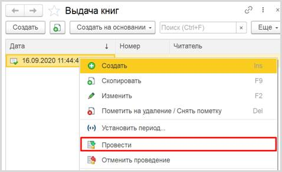
Обратите внимание, что на главной странице система не создала кнопку открытия регистра накопления. Это связано с тем, что все расчеты в регистрах накопления происходят в фоновом режиме, «за кадром», то есть пользователю о них знать не нужно вовсе. Поэтому по умолчанию регистры накопления настраивают так, чтобы пользователи не имели к ним доступа.
Но мы, будучи разработчиками, можем обратиться к любому объекту конфигурации. Для этого воспользуемся функциями для технического специалиста.
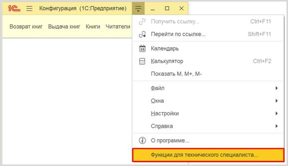
Найдем в списке созданный регистр накопления «ВыданныеКниги» и изучим его содержимое.
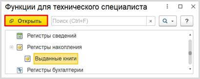
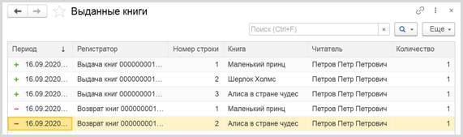
Видно, что в регистр попадают строки с информацией о каждой выданной или возвращенной книге.
Последний шаг – построить отчет.
Определение
Отчет – это такой объект конфигурации, который формирует данные в
понятном для пользователя виде, например, в виде таблицы или диаграммы
(подробнее про отчеты можно прочитать здесь: https://v8.1c.ru/platforma/otchet/).
Добавим
новый отчет «ОтчетПоВыданнымКнигам» и откроем схему компоновки данных.
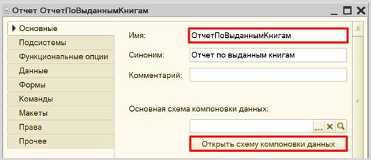
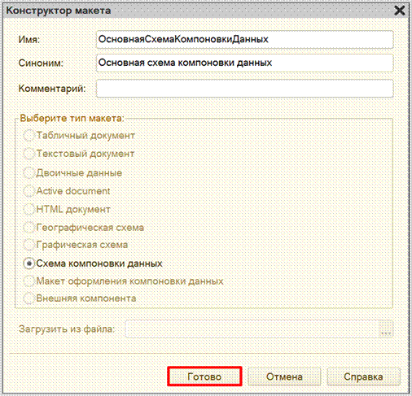
Добавим запрос к базе данных.
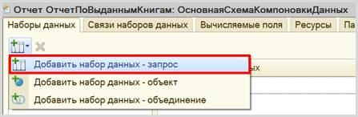
Воспользуемся конструктором запроса.
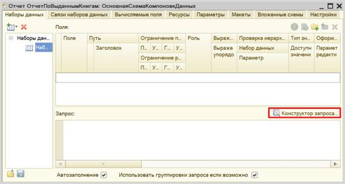
Открывается конструктор запроса. Эта вкладка имеет три части:
q Часть слева отображает все объекты конфигурации, имеющиеся в нашей базе данных. Нужно выбрать лишь те объекты, из которых мы хотим получать данные.
q Посередине находятся таблицы – это выбранные нами объекты, откуда мы хотим получать данные для конкретного отчета.
q Справа поля – это те значения (поля), которые мы хотим увидеть в отчете.
Данные будем брать не из регистра накоплений напрямую, а из виртуальной таблицы, которую создает этот регистр автоматически. Данная виртуальная таблица позволит получить уже просуммированные значения по всем документам.
Чтобы перенести данные из одного окна в другое, просто перетащите
нужные поля с помощью мыши либо воспользуйтесь стрелочками, расположенными
между окнами.
В результате данное окно должно быть заполнено следующим образом:
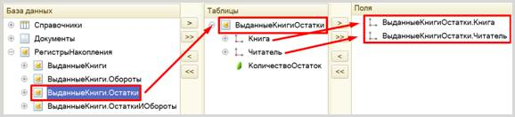
Нажмите на кнопку «ОК». Получившийся запрос должен выглядеть следующим образом:
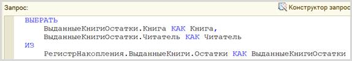
Переходим на вкладку «Настройки» для оформления внешнего вида отчета. Воспользуемся конструктором настроек отчета.
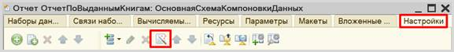
Отчет будем строить в виде списка.
Выберем поля для отображения в отчете. Обязательно расставьте реквизиты
в том порядке, в котором они должны быть в отчете. Для перемещения реквизитов
воспользуйтесь стрелочками.
На следующем окне нужно выбрать группировку. Нас интересует группировка
по читателям.
Ну, и на последнем окне необходимо установить упорядочивание. Сначала
пусть происходит упорядочивания по читателям (имеется в виду упорядочивание по
алфавиту), а затем – по книгам. Воспользуйтесь стрелочками для изменения
порядка реквизитов.
Осталось лишь добавить пользователю возможность
осуществлять отбор по некоторым полям. На той же вкладке «Настройки» найдите
вкладку «Отбор» в нижней части окна и включите отбор по книге и читателю.
Теперь каждое из этих полей нужно сделать видимым для пользователя.
Изменим свойства элемента пользовательских настроек.
Точно так же измените свойства пользовательских настроек и для второго
реквизита отбора.
Теперь можно посмотреть на результат работы отчета в режиме
«1С:Предприятие».
Для более наглядного вида отчета добавьте еще несколько документов о
выдаче и возврате книг в библиотеку.
Отчет дает наглядное представление о том,
кто из читателей какие книги взял.
Теперь проверим работоспособность отбора. Сделаем отбор по читателю.
Ну, и попробуем сделать отбор по книге.
Поставленная задача решена.